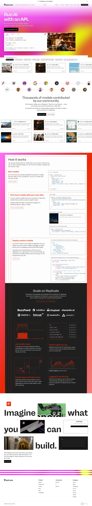

Replicate 主题
Replicate 的 Design.md 主题展示，围绕AI、媒体内容、极简清爽、SaaS 产品组织页面。
Run ML models via API. Clean white canvas, code-forward.
AI媒体内容极简清爽SaaS 产品开发工具浅色界面B2B 产品效率工具专业工具

来源
- 来源
- getdesign.md
- 镜像
- github:VoltAgent/awesome-design-md
- 网站
- https://replicate.com/
- 详情
- https://getdesign.md/replicate/design-md
色板
#202020: #202020#ea2804: #ea2804#c01f00: #c01f00#ffffff: #ffffff#3a3a3a: #3a3a3a#575757: #575757#646464: #646464#8d8d8d: #8d8d8d#bbbbbb: #bbbbbb#fcfcfc: #fcfcfc#f9f7f3: #f9f7f3#f3f0e8: #f3f0e8
字体
display: rb-freigeist-neuebody: basier-squaremono: jetbrains-monohints: rb-freigeist-neue,basier-square,jetbrains-mono,Geist,Inter
圆角
control: 9999pxcard: 10pxpreview: 0pxpill: 9999pxsource: design-md
间距
xxs: 2pxxs: 4pxsm: 8pxmd: 12pxlg: 16pxxl: 24pxxxl: 32pxxxxl: 48pxsection: 96pxband: 160pxsource: design-md
使用建议
建议
- 建议：Use {colors.canvas} (cream) as the default page background. White ({colors.surface-card}) appears only on individual cards, inputs, and the hero illustration backdrop。
- 建议：Reserve {colors.primary} for the primary CTA, the home hero band, and inline links — three roles, nothing else。
- 建议：Set every interactive element to {rounded.full} — buttons, inputs, badges, avatars, pills。
- 建议：Step content cards up to {rounded.md} (10px) or {rounded.lg} (16px) — never sharp corners。
- 建议：Open hero bands with {typography.display-xxl} (128px) and {typography.display-xl} (72px) at {lineHeight: 1.0} with negative letter-spacing。
避免
- 避免：replace cream with pure white at the page level. The brand temperature comes from {colors.canvas}。
- 避免：introduce a secondary brand colour. Orange is the only accent; semantic green and focus blue are functional, not decorative。
- 避免：loosen display {lineHeight} past 1.0. Tight stacking is structural。
- 避免：bump body weight to 500 for emphasis — change family ({basier-square} → {rb-freigeist-neue}) instead。
- 避免：apply {rounded.full} to content cards. Pill-shaped cards break the rhythm。
查看 DESIGN.md